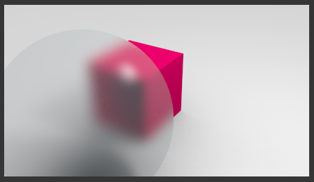
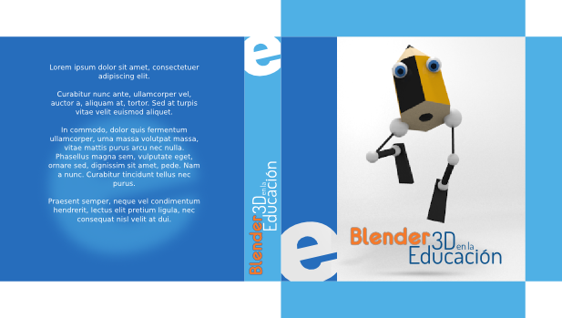
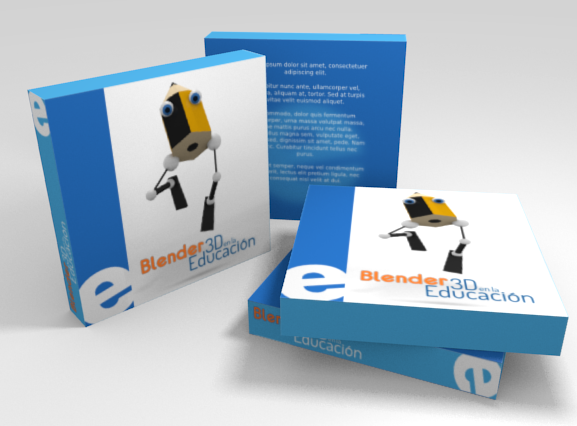

Actividades
1- "Solo sombra" al plano del suelo
Recupera archivos anteriores y aplícales la opción Solo sombra al suelo. Exporta luego en PNG el render y observa sus nuevas posibilidades para integrarse con otros materiales al tener fondo transparente.
2- Enmascara textos
Aplica la propiedad Enmascara a objetos de texto para obtener PNG en los que el texto queda transparente.
3- Crea materiales translúcidos
Cuando disminuyes el parámetro Cantidad en la Transparencia estás consiguiendo otorgar sensación de translucidez al material. Haz variaciones para ver y comparar resultados. No olvides aumentar el valor de Muestras para evitar el ruido.
4- Practica la rotación del mapeado
Mapea un plano y después varía la orientación sin girar los vértices en el Editor UV . Usa para ello la opción Malla/Caras/Rotate UVs.
No dejes pasar la ocasión de practicar con su compañera Mirror UVs.
5- Estrellas de colores
Crea una escena con un cielo de estrellas coloreadas. Busca la opción en la botonera Estrellas del Mundo  .
.
6- Altera la hora en el desierto
Has hecho un desierto con anterioridad. Cambia la dirección de los rayos del sol y crea una surtido de renders que reflejen diferentes horas del día.
7- Gana destreza con Distancia en Atmósfera
Este es un parámetro difícil de dominar; así que dedícale un rato haciendo pruebas y sacando conclusiones.
8- Nuevo mapeo de un cubo
Esta imagen es diferente a la de la cámara oscura en lo que a geometría se refiere. Mapéala sobre un cubo escalado (clic derecho sobre la imagen y guardar).

Este es un resultado en render tras hacer unos duplicados.
